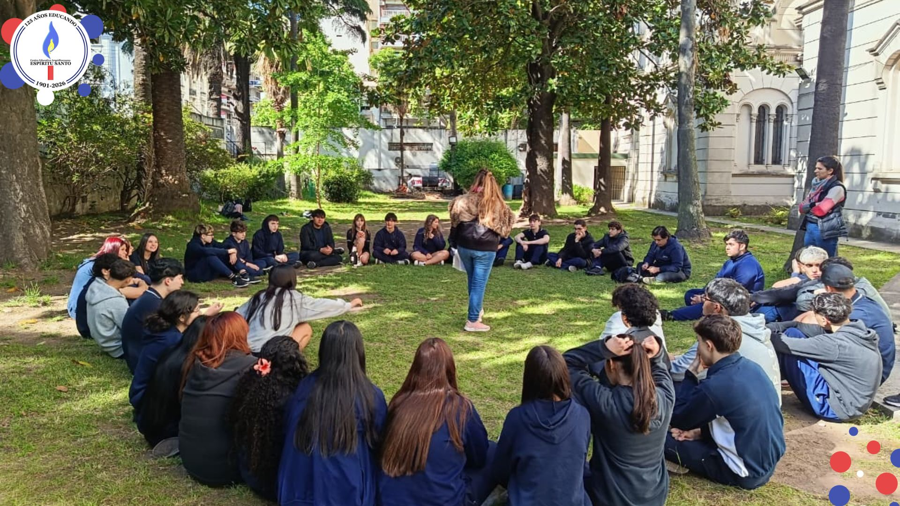
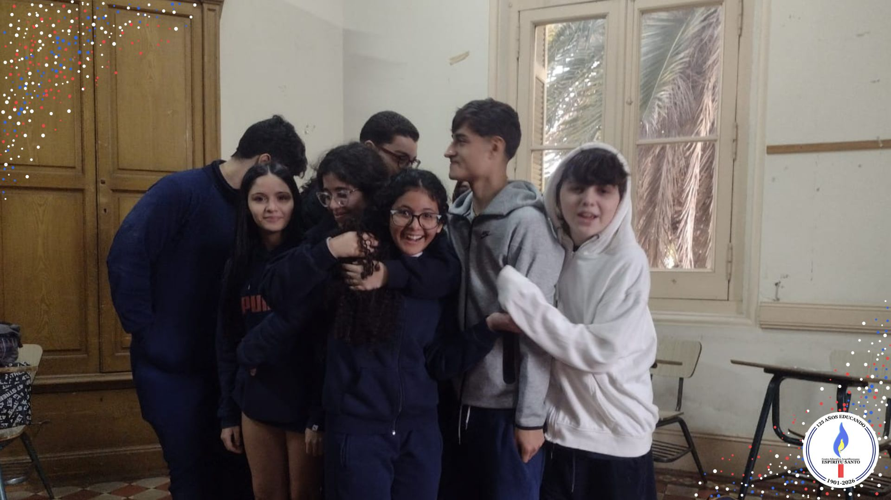

Convivencia de los alumnos de 3º A y B
Por: Annette Jontin Luna

Participaron alumnos de 3º A y B
Hace poco los cursos de tercero A y tercero B tuvimos una jornada de convivencia en JESA, fue una experiencia divertida para salir de la rutina del aula y compartir tiempo juntos. Cuando llegamos nos sentamos a charlar entre nosotros, pusimos a circular el mate y empezamos a compartir el desayuno mientras jugábamos. Al principio se notaba que cada división estaba un poco más por su lado, pero al cabo de un rato las profesoras Marina Samaniego y Gisela Orellano ;que fueron las profesoras que nos acompañaron junto con la preceptora Laura; nos dijeron que armemos una ronda. Ellas hacían preguntas y quien tenía ganas (o a quien elegían) respondía. Salieron temas muy interesantes, porque las profes nos fueron preguntando qué era lo que más nos gustaba del curso y qué cosas sentíamos que no estaban tan buenas. Mientras desde nuestro lado de tercero B estuvimos un poco más callados o reservados, los chicos de tercero A se animaron a hablar sin filtro y tiraron tanto cosas positivas como algunas críticas o puntos a mejorar. Más allá de las distintas opiniones, estuvo bueno escuchar a todos.
Después pasamos a una actividad que estuvo muy divertida y nos obligó a mezclarnos entre todos. Nos separaron en grupos y nos plantearon el desafío de imaginar que estábamos juntos en un bote y que teníamos que ponernos de acuerdo entre ambos cursos para tomar decisiones en conjunto y lograr llegar a salvo a una isla. Logramos ponernos de acuerdo y todos los grupos llegaron a salvo a la isla. Más tarde volvimos a charlar un rato sobre aquellas cosas que a veces nos molestan en la convivencia diaria, pero ya con mucha más confianza y soltura que al principio.

Hacia el final de la jornada hicimos una dinámica que cerró muy bien todo lo que veníamos hablando. Cada uno a mitad de la convivencia recibió un papelito con forma de ficha de rompecabezas para escribir qué haría personalmente para que el curso sea mejor y al final nos dieron los papelitos al azar y fuimos pasando uno por uno, a poner la pieza que nos tocó y leer en voz alta lo que habíamos puesto.
La pasamos muy bien, nos reímos bastante, comimos lo que habíamos llevado y jugamos. Fue una actividad muy divertida.